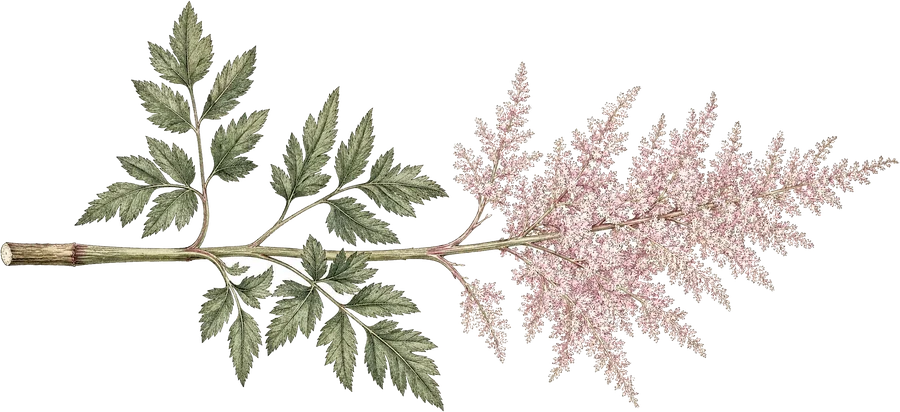

The Natural History Room
One double bed among antiques and cabinets of nature collections — the room for the person who reads the labels.

Stay the nightFilled with genuine antiques and botanical-garden-sized tropical plants. Open year-round, with a full kitchen, a woodstove, a piano and a library.
One double bed among antiques and cabinets of nature collections — the room for the person who reads the labels.
Two twin beds, a complete Art Deco furniture set, and roses worked through every detail of the décor.
A 1940s waterfall double, a child's bed, and an Oriental rug — the warmest room in the house in October.
$75 per night, single or double occupancy.
$95 family rate. Year-round.
Full kitchen · woodstove · fireplace pit · piano · library · TV/DVD · laundry · free WiFi · linens provided
Gardening · farm tours · fishing · leaf peeping · the gift & craft shop · picnic tables at the river